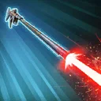
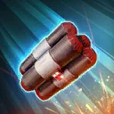
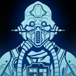
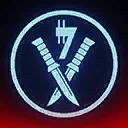

Edrio Two Tubes
A powerful Tognath Mercenary who fought with Saw Gerrera's Partisans and gave his all for the Rebellion
A powerful Tognath Mercenary who fought with Saw Gerrera's Partisans and gave his all for the Rebellion

Deal Physical damage to target enemy and inflict Tenacity Down for 2 turns. If this attack scores a critical hit, all Rebel Fighter allies gain 10% Critical Chance (stacking, max 60%) until the end of battle.
During Edrio Two Tubes' turn, if the target has Explosive Trap, remove 1 stack of Explosive Trap.

Deal Physical damage and inflict a stack of Damage Over Time and Daze for 2 turns on all enemies.
If Saw Gerrera is the ally in the Leader slot and the target has Explosive Trap, enemies lose 2 stacks of Explosive Trap; if they have no stacks of Explosive Trap and Saw Gerrera's granted ability Set Explosive Trap has been used, inflict 10 stacks of Explosive Trap, which can't be copied, dispelled, evaded, or resisted.
All Rebel Fighter allies gain 50% Offense for 2 turns. Whenever Edrio Two Tubes uses this ability against an Empire enemy, he removes an additional stack of Explosive Trap.
Deal Physical damage to target enemy. This attack can't be evaded and inflicts Healing Immunity for 2 turns. This attack deals 100% more damage against Empire enemies. The first time this ability is used against any enemy in an encounter, Edrio Two Tubes ignores Protection.
If Saw Gerrera is the ally in the Leader slot and the target has Explosive Trap, Saw Gerrera assists. Two Tubes removes 3 stacks of Explosive Trap from that enemy; if the enemy had no stacks of Explosive Trap, inflict Disarm for 2 turns or until Two Tubes is defeated and remove it from all enemies, which can't be copied, dispelled, evaded, or resisted.
This ability starts on cooldown, and its cooldown is reduced by 1 whenever an enemy starts their turn; when this ability's cooldown reaches 0, Edrio Two Tubes gains a bonus turn.

At the start of battle, Rebel Fighter allies gain 50% Potency and Tenacity, doubled for Saw Gerrera if he is the ally in the Leader slot.
If neither Luthen Rael nor Mon Mothma is present as an ally and Saw Gerrera is the ally in the Leader slot: At the start of each encounter, Rebel Fighter allies gain 50% Critical Chance and Critical Damage and are immune to Cooldown Increase until the end of the encounter. Whenever Edrio Two Tubes deals damage to a debuffed enemy, he gains 5% Critical Damage (stacking, max 80%) until the end of battle. Whenever Explosive Trap detonates, Rebel Fighter allies gain 30% Offense for 2 turns and 50% Turn Meter.
Whenever an ally defeats an enemy, Two Tubes reduces the cooldown for For Yar Togna by 2, doubled if the enemy is Empire.
Omicron Boost : While in Territory Wars and there are no Galactic Legends: For Yar Togna no longer starts on cooldown. Rebel Fighter allies gain 30% Offense and 100% Potency and Tenacity. Whenever Two Tubes critically hits an enemy, all Rebel Fighter Mercenary allies ignore Taunt for 2 turns and all Rebel Fighter allies are immune to Healing Immunity for 1 turn.
Whenever Two Tubes damages an enemy that has Explosive Trap, he deals 80% more damage. Whenever an Empire enemy with Explosive Trap is defeated by Two Tubes, they can't be revived. If all allies are Rebel Fighters, Two Tubes' Special, Drop the Proton Bombs, deals 50% more damage to each enemy inflicted with Burning or Damage Over Time.

At the start of battle, Edrio Two Tubes gains 1 stack of Soldier of Fortune for each Relic Amplifier level he has. Whenever Two Tubes critically hits an enemy, he gains a stack of Soldier of Fortune. Two Tubes loses 3 stacks of Soldier of Fortune whenever he uses Drop the Proton Bombs.
At the start of their turn, all Mercenary allies gain 10% Accuracy (stacking) and 5% Critical Chance (stacking, max 75%) for each stack of Soldier of Fortune they have until the start of their next turn.